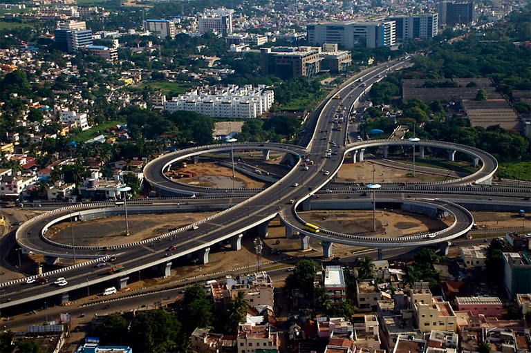
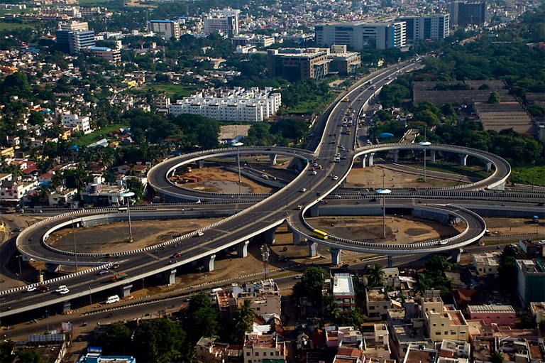

Chennai, the capital of Tamil Nadu, is a vibrant coastal city known for its rich cultural heritage and dynamic urban life. Located on the Bay of Bengal, it boasts Marina Beach, one of the world’s longest urban beaches. Chennai is famed for its historic temples like Kapaleeshwarar Temple and San Thome Basilica, reflecting its deep-rooted religious and architectural traditions. As a hub for Tamil cinema (Kollywood) and Carnatic music, the city holds a strong cultural appeal. Chennai is also a major educational and industrial center, renowned for its IT and automobile industries. With delicious South Indian cuisine, a thriving arts scene, and warm hospitality, Chennai beautifully blends tradition with modernity.